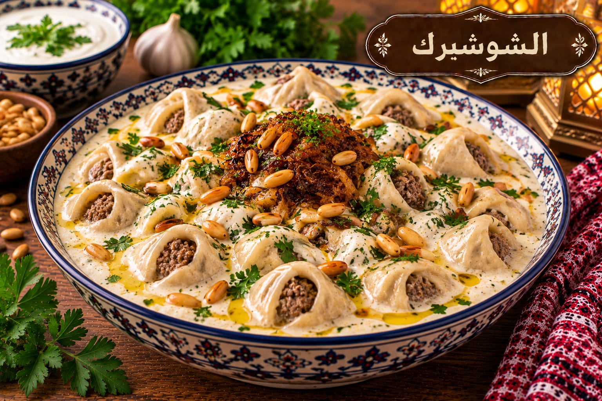

الشوشبرك
عجين محشو باللحم مطبوخ باللبن

مقادير الشوشبرك
- 3 أكواب طحين
- 1 كوب ماء تقريبًا
- ½ ملعقة صغيرة ملح للعجين
- 300 غ لحم مفروم
- 1 بصلة
- 1 كغ لبن
- 1 ملعقة كبيرة نشا
- 1 بيضة
- 1 ملعقة صغيرة ملح للبن
- 4 فصوص ثوم
- 1 ملعقة صغيرة كزبرة
طريقة عمل الشوشبرك
- اعجني الطحين والماء والملح حتى تصبح العجينة ملساء واتركيها ترتاح 20 دقيقة.
- حمري اللحم والبصل وتبليهما واتركي الحشوة تبرد.
- افردي العجين رقيقًا وقطعي دوائر صغيرة واحشيها وأغلقيها ثم اخبزيها 10–12 دقيقة.
- اخفقي اللبن والنشا والبيضة والملح قبل وضعها على النار ثم سخني مع التحريك المستمر حتى الغليان.
- أضيفي حبات الشوشبرك 10 دقائق ثم أضيفي تقلية الثوم والكزبرة.